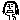

| 2013/01 25 Fri | 349回目*marika |
＼べにいもちゃんと／
朝更新してみる。
昨日学校で無性に苔の魅力を
誰かに伝えたくて先生に
まりか「あの！苔ってどこに
売ってますかね？！」
先生「...は？...コケ？」
まりか「苔、育てたいんですよ」
先生「どうしたの。悩みでもあるの？
悩みがあるんなら先生聞くよ」
って違あああああ！！
一向に話が進まない。
ので近くにいた友達に
なんとなく苔について話してみた。
ドン引きされた

その後
「屋久島～」
ってぼやいたら
更にドン引きされた
がーん
**********
 俺中学生なんだけど、親に
俺中学生なんだけど、親に
「自分は乃木坂46のファンだ」
って言うべきだと思う？
 なかなか言えるもん
なかなか言えるもん
じゃないのかな？
私はそういうのにもともと
興味なかったから特になかったけど...
あなたのお父さんお母さんにも
乃木坂46のこと知ってほしいな
って思います^^！
隠すことないと思うよ！
ファンになってくれて
ありがとう

学校と乃木坂どっちが好きですか？
勉強嫌だけど、友達が好きです。
乃木坂は私にとってもう一つの家
みたいなもんです。
お仕事もだいすきです。
だからどっちも大事だね！
握手会のときに誕プレって
インフォメーションに
持って行けばいいのかな？
名前とかどうすればいいのー？
インフォメーションに
お願いします。
名前も箱などに書いてくださったら
すぐわかると思う

本当にありがとうございます。
めっちゃ嬉しいです！
これはおやつじゃないけど、
ついついおやつに食べちゃう
っていうような食べ物ある？
チーズとかナッツとか海苔とか！
違う人推しててもまりかが
最近気になっております
どうすればいいのー？（笑）
照れちゃう

気になるだけじゃなく
すきになってもらえるように
頑張ります！
まりっか以外で童顔の
メンバーといえば誰ですか？
らりん、生駒
サンリオのキャラクターで
好きなのなに？
最近はあんまりキャラクターものに
はまってないなあ...
あのヘッドホンはどこのブランド？
beats by dr.dreです♪
貝やキノコを食べるように
なりましたか？
まだダメなのー泣
きのこは我慢できるようになった。
生写真のまりっかかわいすぎて
推しメンにしたくなっちゃった
んだけどこんな理由でもいい？
それは！嬉しいです

かわいく撮れるように
もっと勉強する！
学校で寝ない方法教えて！
絵を描くと想像力で頭使うから
眠たくならないよー！
でも授業も聞こうねー笑
実際私も眠くなったら
お絵描きしてる...
はい授業聞きますごめんなさい

**********
そういえば！
プレゼント届きました。
メリークリスマス！
ハッピーニューイヤー！
本当にありがとうございました。

白！！！
そういや昨日は物作りしてたんだ。
ネックレス作ってました。
もうすぐ完成しそう。
あーミシン自由に使えるように
なりたいなあ
もう一回教えてもらおうっと。
ふへへ

なんかいろいろ買いに行きたいなあ
100均行きたいなあ
今日着てる服、
私、寒色系です！
って感じだ

では、今日も頑張りまりか。
まりか
コメント(235)
2013/01/25 09:24